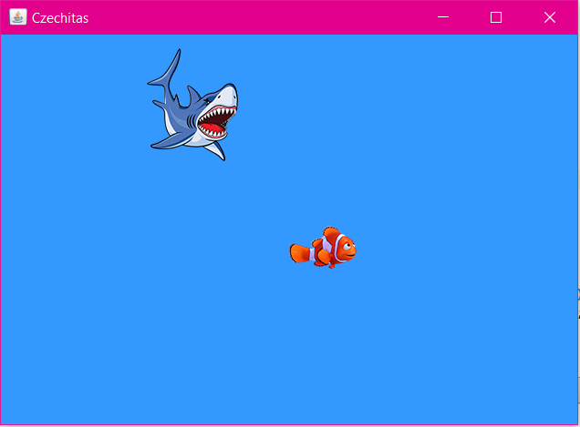

Domácí úkol - Nemo 1
Spusťte demo, zahrajte si jej a vytvořte totéž.
Demo stahujte a zkoušejte odtud: Nemo 1
Tohle by se vám mohlo hodit ;-)
Jak už jsem říkala na hodině, budete potřebovat spojit věci, které jsme dělali v minulém úkolu (v šibenici), a věci, které jsme dělali na poslední hodině v pinecu.
Budete opět potřebovat událost keyPressed - pomocí šipek budete ovládat pohyb Nema.
Využijeme také Timer. Spustíme jej v události windowOpened a zastavíme v události windowClosed (podobně jako v Pinecu).
Tady je kód, který budete potřebovat:
public class HlavniOkno { // JFormDesigner - Variables declaration - DO NOT MODIFY //GEN-BEGIN:variables // Generated using JFormDesigner Evaluation license - Kurz Czechitas JLabel ruzneKomponenty; JLabel jesteDalsiKomponenty; // JFormDesigner - End of variables declaration //GEN-END:variables Timer casovac; private void priOtevreniOkna(WindowEvent e) { casovac = new Timer(25, this :: priTiknutiCasovace); casovac.start(); } private void priZavreniOkna(WindowEvent e) { casovac.stop(); } // Dalsi kod }
Metodu priTiknutiCasovace(...) budete potřebovat pro nastavení automatického pohybu žraloka (to je obdobné jako u míčku v Pinecu):
private void priTiknutiCasovace(ActionEvent e) {
/* Tady bude vas kod */
}
Pokud budete mít s úkolem jakýkoliv problém, využjte naši
facebookovou skupinu,
kde vám rádi poradíme.
Raději se 10x zeptejte, než abyste to vzdaly!